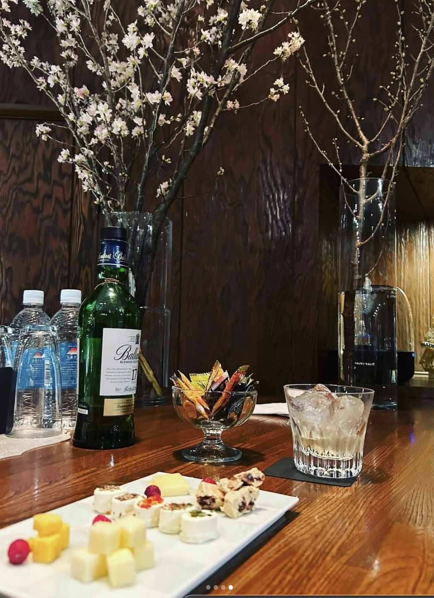
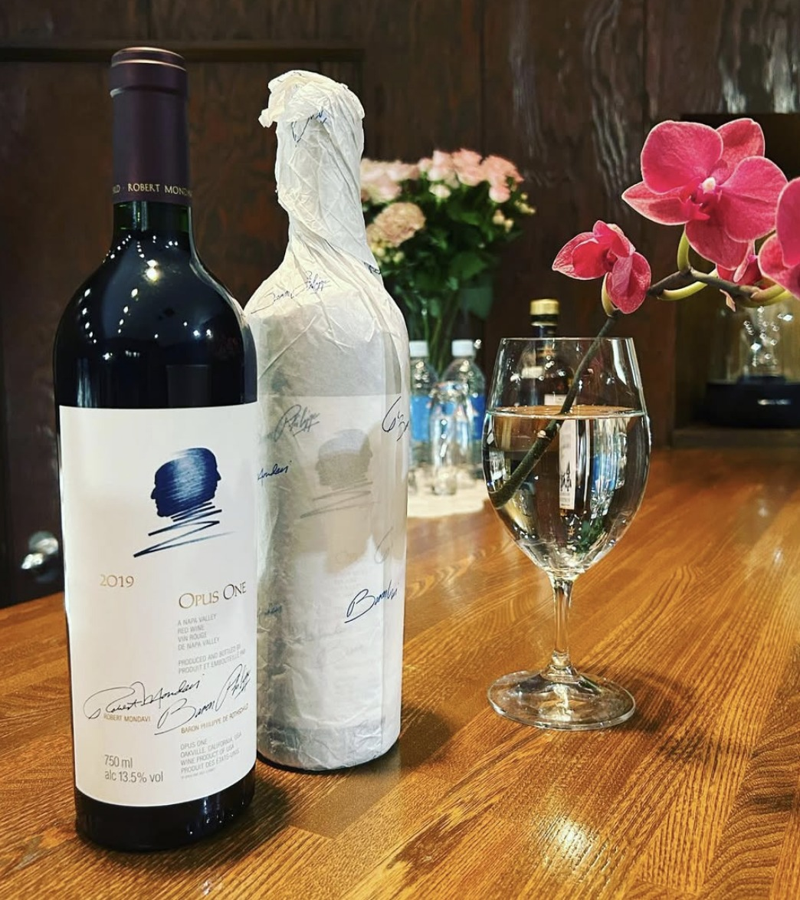
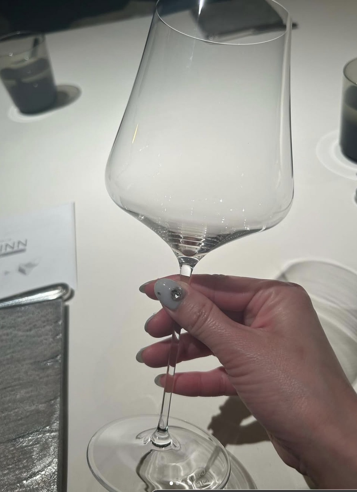
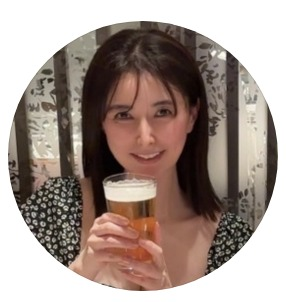

RECRUIT
水戸・泉町のラウンジ Ayame。
月1日・1日2時間から、自分のペースで働けます。

ABOUT
Ayame は、木目のカウンターと季節の花が迎える、落ち着いた雰囲気のラウンジです。お客様とゆっくり会話を楽しむお店なので、無理にテンションを上げる必要はありません。
はじめて夜のお仕事をする方が多く、すぐに馴染める気軽な空気があります。考え中の方は、まず見学にお越しください。
POINT
01
1日2時間から、週1日・月1日から働けます。スポットや短期の勤務も相談できるので、学業や昼のお仕事と両立できます。
02
ノルマ・罰金はありません。同伴やアフターの強制、アルハラもなし。お酒が飲めない方も働いています。
03
各種バック、同伴料3,000円全額支給、代行代・美容代の支給（規定あり）、貸衣装。日払い・週払いも相談できます。
POSITION
時給2,500円〜 応相談
お客様にお酒を作り、会話を楽しんでいただくお仕事です。ドリンク・指名・同伴の各種バックがあります。
時給1,800円
カウンター越しの接客が中心です。ガールズバーに興味がある方にも向いています。
時給1,300円
接客に自信がない方はこちらから。お店を内側から見て、慣れてから決めても大丈夫です。


ONE DAY
※ここはサンプルです。実際には Ayame のスタッフの1日の流れに差し替えます
VOICE
※ここはサンプルです。実際に働く先輩からのメッセージ・写真に差し替えます
夜のお仕事は初めてでしたが、落ち着いたお店なのですぐに慣れました。試験の時期は出勤を減らせます。
昼の仕事のあと、週1〜2日だけ入っています。お酒を無理にすすめられることがなく、長く続けられています。
最初はホールで雰囲気を知ってから接客に挑戦しました。先輩が隣でフォローしてくれるので安心です。
Q & A
※ここはサンプルです。実際には Ayame の「よくある質問」が入ります
大丈夫です。未経験から始めたスタッフが多いお店です。ホールスタッフから始めることもできます。
働けます。お酒を作って会話を楽しむお仕事なので、ご自身が飲めなくても問題ありません。
ワンピースなどカジュアルスマートな私服で働いています。貸衣装も多数あります。髪型・髪色・ピアス・ネイルは自由です。
できます。見学だけでも歓迎しています。お店の雰囲気を見てから決めてください。
勤務は00:00までで、早い時間に上がる相談もできます。代行代の支給（規定あり）があり、車通勤も可能です。
CONTACT PERSON
※ここはサンプルです。実際の担当者のお名前・メッセージに差し替えます

少しでも気になったら、まずはお店をのぞきに来てください。質問だけのDMも歓迎しています。お会いできるのを楽しみにしています。
REQUIREMENTS
| 募集職種 | ① フロアレディ ② カウンターレディ ③ ホールスタッフ |
|---|---|
| 雇用形態 | アルバイト・パート |
| 給与 | ① 時給2,500円〜（応相談） ② 時給1,800円 ③ 時給1,300円 昇給あり／日払い・週払い応相談 |
| 勤務時間 | 20:00〜00:00 1日2時間からOK／週1日・月1日からOK／スポット・短期も可 |
| 休日 | 日曜日・祝日 |
| 応募資格 | 20歳以上（喫煙場所での勤務が必須のため） 未経験の方、Wワーク・フリーター・学生・主婦（夫）の方、歓迎 |
| 待遇 | 各種バック（フロアレディ：ドリンク／指名／同伴）、同伴料3,000円全額支給、同伴・アフター強制なし、ノルマ・罰金なし、交通費一部支給（規定あり・応相談）、代行代支給（規定あり）、美容代支給（出勤日数による）、貸衣装あり、髪型・髪色・ピアス・ネイル自由、車通勤OK、友達と応募OK、体験入店OK |
| 勤務地 | ラウンジ Ayame 茨城県水戸市泉町3丁目5-20 アイビルI 1階 |
| 応募方法 | Instagram（@ayako_ayame）のDMよりご連絡ください |